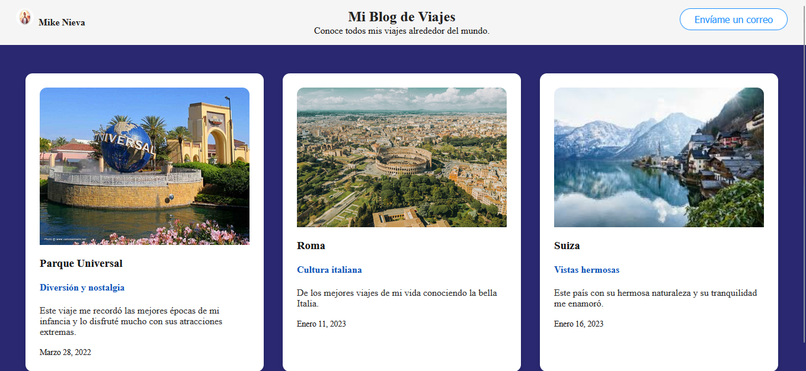

Tecnologías


Trabajé durante 7 meses como soporte técnico en aplicaciones y entornos web, tambien apoyaba al equipo desarrollador con el desarrollo de estas. Mi labor consistió en solucionar problemas que tuvieran las apps y los entornos webs, garantizando el correcto funcionamiento de las plataformas y asistiendo al equipo para un mejor rendimiento de la empresa.
Durante más de 9 meses, fui responsable de administrar una ferretería familiar, gestionando inventarios, organizando procesos internos y brindando una atención al cliente excepcional. Desarrollé habilidades de liderazgo y manejo de recursos en un entorno dinámico y exigente.
Lideré el desarrollo de un proyecto de simuladores de física para un concurso universitario, compitiendo entre tres sedes de mi universidad y obteniendo el tercer puesto. Este proyecto combinó programación, diseño visual y conocimiento científico, destacando por su funcionalidad y diseño interactivo.
Un simulador interactivo que modela movimientos físicos como péndulos y proyectiles.
Ver en GitHubPágina desarrollada con HTML, CSS y JS, que tiene como fin un catálogo para adoptar mascotas.
Ver en GitHubUn blog desarrollado con HTML, CSS y JS para compartir experiencias de viaje.
Ver en GitHub ¿Tienes preguntas o necesitas más información? ¡No dudes en escribirme!